从直线检测到无人驾驶车道检测
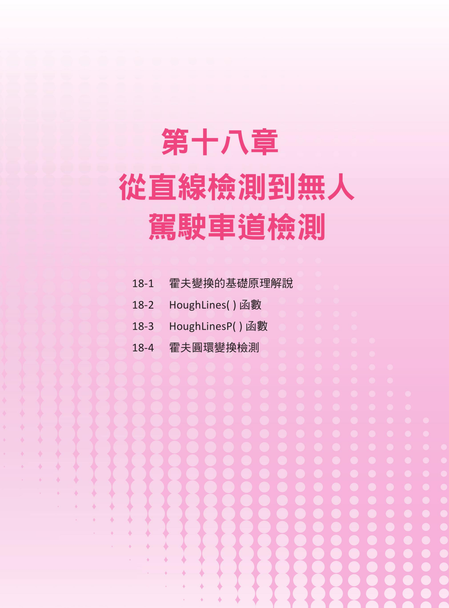
霍夫变换的基础原理解说
霍夫变换（Hough Transform）最初是 1962 年由霍夫提出专利申请，专利名称是「辨识复杂图案的方法」（Method and Means for Recognizing Complex Patterns）。此方法的主要观念是任何一条直线可以用斜率（slope）和截距（intercept）表示，同时使用斜率和截距将一条直线参数化。
现在广泛使用的霍夫变换，是 1972 年由 Richard Duda 和 Peter Hart 发明。经典的霍夫变换是侦测影像中的直线，之后的霍夫变换不仅能辨识直线，也可以辨识其他简单形状，例如圆形和椭圆形。1981 年 Dana H. Ballard 发表了 Generalizing the Hough transform to detect arbitrary shapes，自此电脑视觉领域开始流行应用霍夫变换；目前最流行的自动驾驶，也使用霍夫变换对行车的车道进行检测。
18-1-1 认识笛卡儿座标与霍夫座标
笛卡儿座标系统就是我们熟知的直角座标系统。在直角座标系统中，一条直线可以用下列方程式表示：
在上述方程式中，m 代表斜率，b 代表截距。相同的概念若映射到霍夫空间，斜率 m 和截距 b 也可以当作座标，因此笛卡儿座标中的一条直线，会映射到霍夫空间中的一个点。
18-1-2 映射观念
笛卡儿空间中存在 1 个点，可以映射到霍夫空间成一条线；笛卡儿空间中存在 2 个点，可以映射到霍夫空间成两条交叉的直线。若笛卡儿空间两个点 (x0, y0) 和 (x1, y1) 可以连成一条直线，假设直线为 y = m1x + b1，则这条直线映射到霍夫空间的点是 (m1, b1)。
18-1-3 认识极座标的基本定义
极座标（Polar coordinate system）是一个二维的座标系统，每一个点的位置使用夹角和相对原点的距离表示。点可写成 (r cosθ, r sinθ)。
18-1-4 霍夫变换与极座标
在笛卡儿座标系统中，直线方程式 y = m0x + b0 的最大问题是无法表示一条垂直线，因为斜率值会是无限大。因此 Richard Duda 和 Peter Hart 发明使用极座标方式表示直线的参数，下方左图是笛卡儿空间，右图是霍夫空间；相当于极座标上的线映射到霍夫空间也是一个点 (ρ, θ)。
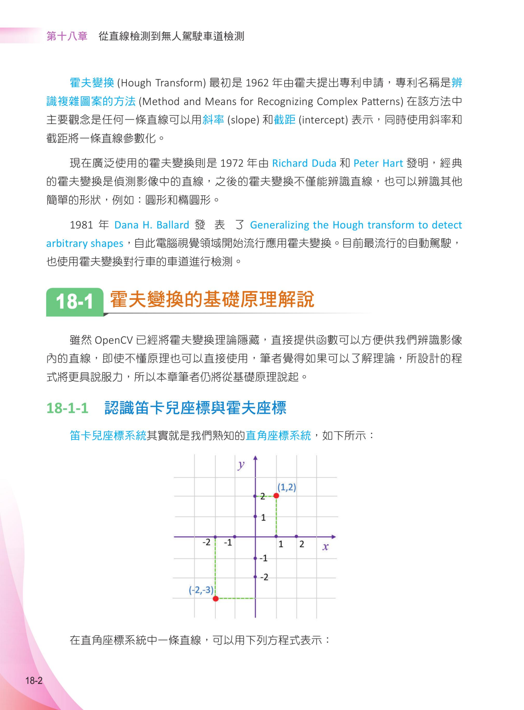
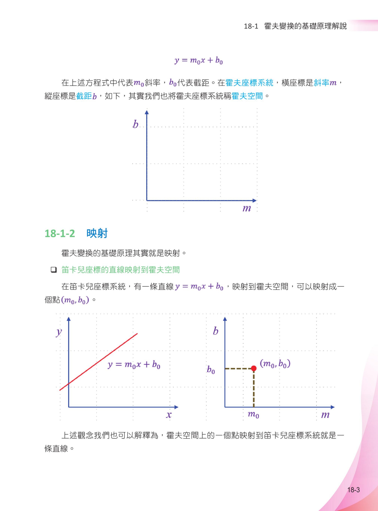
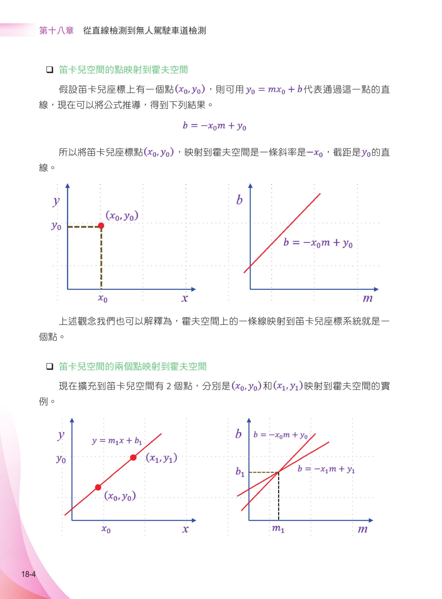
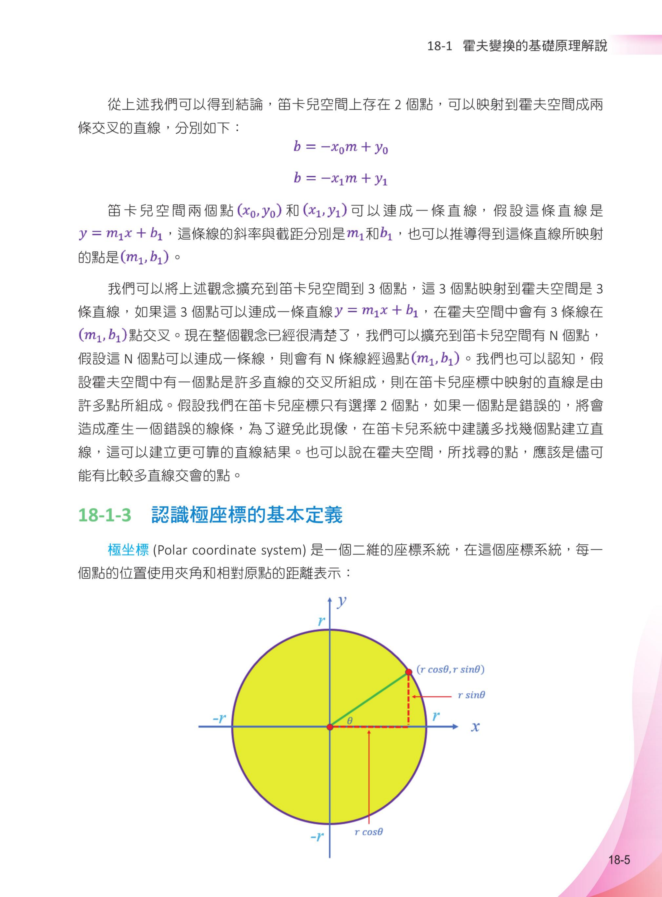
(r cosθ, r sinθ)。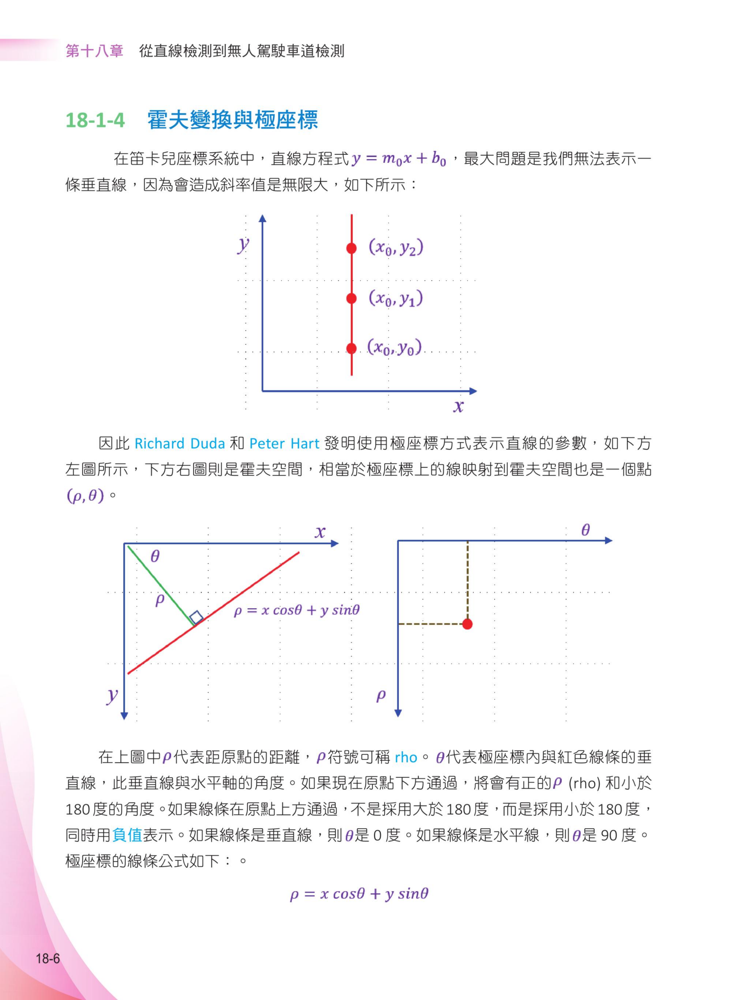
ρ = x cosθ + y sinθ 表示直线。HoughLines() 函数
OpenCV 提供了两种用于检测直线的霍夫变换函数，本节先说明基本版的 HoughLines()。这个函数需要输入二值影像，实务上常先将影像转为灰阶，再使用 Canny 做边缘侦测。
| 参数 / 回传值 | 说明 |
|---|---|
lines | 函数回传值，直线参数，格式是 (ρ, θ)，元素类型是 Numpy 阵列。 |
image | 要辨识的影像，这是二值影像；建议先使用 Canny 边缘侦测。 |
rho | 以像素为单位的距离 ρ，常将此值设为 1，表示检测所有可能的半径长度。 |
theta | 检测角度 θ，常将此值设为 π/180，表示检测所有可能的角度。 |
threshold | 阈值；如果此值越小，所检测的直线就会越多。 |
程式实例 ch18_1.py：使用 calendar.jpg 当作影像，然后 HoughLines() 函数检测此影像内的直线。
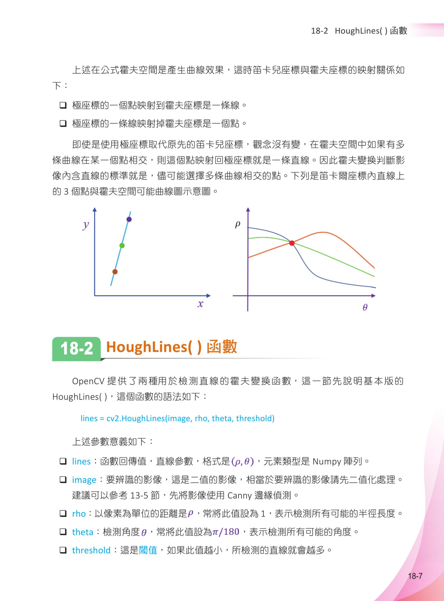
HoughLines() 语法与 lines、image、rho、theta、threshold 参数说明。HoughLinesP() 函数
HoughLinesP() 是进阶版的直线检测函数，基本上是 18-2 节 HoughLines() 的改良，主要增加 minLineLength 和 maxLineGap 参数。此函数所采用的方法称为机率霍夫变换法。
| 参数 / 回传值 | 说明 |
|---|---|
lines | 函数回传值，直线参数为 (x1, y1) 和 (x2, y2)，只要将两点连起来就构成直线。 |
image | 要辨识的二值影像，建议先使用 Canny 边缘侦测。 |
rho | 以像素为单位的距离，常设为 1。 |
theta | 检测角度，常设为 π/180。 |
threshold | 阈值；如果此值越小，检测的直线会越多。 |
minLineLength | 检测直线的最小长度，短于该长度的直线会被舍去。 |
maxLineGap | 线段之间最大的允许间隙，短于该长度会被视为一条直线。 |
程式实例 ch18_2.py：使用 lane.jpg 影像，设计仓库道路识别。
上述范例可用于简单道路识别。对于复杂的图，可能需要不断调整 HoughLines() 函数的 threshold 参数。实际应用不同影像时，必须适度调整 HoughLinesP() 的参数。
程式实例 ch18_3.py：无人驾驶汽车的道路检测。
检测所有车道时，当无人车在驾驶时，更重要的是检测目前车子所在车道。此时可以使用阈值处理，将目前所在车道或要专注的车道处理成 ROI 区域，这个 ROI 区块用遮罩处理。
HoughLinesP() 的参数。
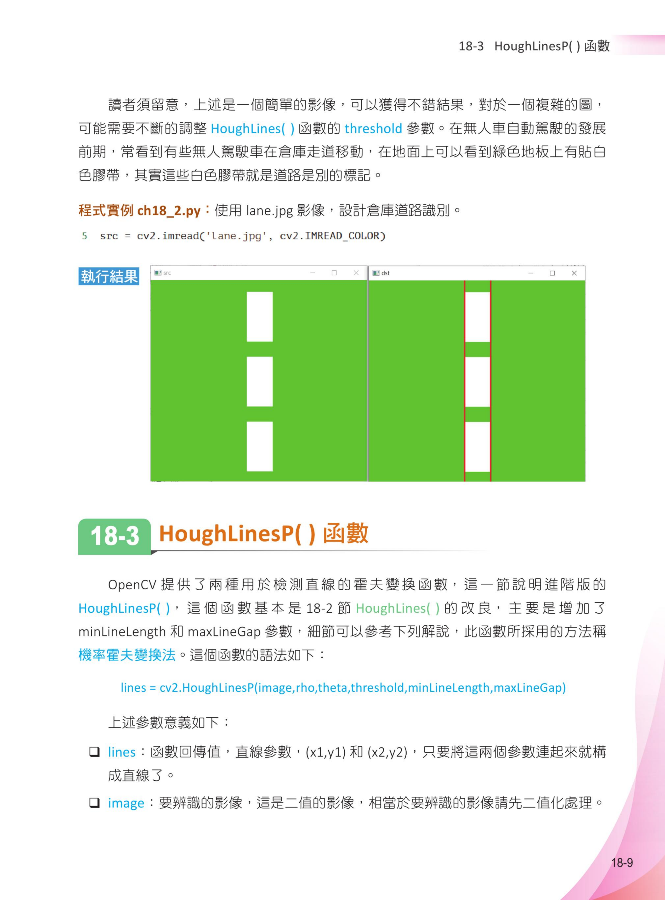
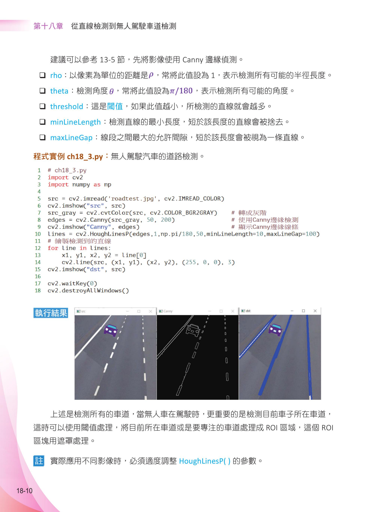
霍夫圆环变换检测
霍夫变换除了可以检测直线，也可以用于检测其他形状的物体。本节讲解检测圆形物体的函数 HoughCircles()。在霍夫圆环检测中，其实就是要检测圆形的中心点 (x, y) 座标，和圆环的半径 r。
| 参数 / 回传值 | 说明 |
|---|---|
circles | 函数回传值，由圆中心点和半径所组成的 numpy.ndarray 阵列，格式是 [(x1, y1, r1), (x2, y2, r2), ...]。 |
image | 要辨识的二值影像，需先二值化处理。 |
method | 目前可以使用 HOUGH_GRADIENT，此方法先对影像执行 Canny 边缘检测，再使用 Sobel 演算法计算区域梯度并累加圆中心。 |
dp | 累加器分辨率。例如 dp=1 时，累加器与输入影像有相同解析度；dp=2 时，累加器宽高为输入影像的一半。 |
minDist | 两个不同圆之间最小的距离。太小会将多个邻接圆检测为一个圆；太大则部分圆无法检测出来。 |
param1 | 与 method 相关的高阈值，预设值是 100；一般低阈值是高阈值的一半。 |
param2 | 与 method 相关的低阈值，预设值是 100。 |
minRadius | 圆半径的最小值，小于此半径的圆将被舍去，预设值是 0。 |
maxRadius | 圆半径的最大值，大于此半径的圆将被舍去，预设值是 0。 |
使用这个函数时，为了降低影像噪音，建议可以先用 medianBlur() 去除影像杂质。
程式实例 ch18_4.py：有一个影像内含多个圆圈，这个程式会将半径大于 70 的圆圈起来。半径小于 70 或其他外形的物件则不理会。
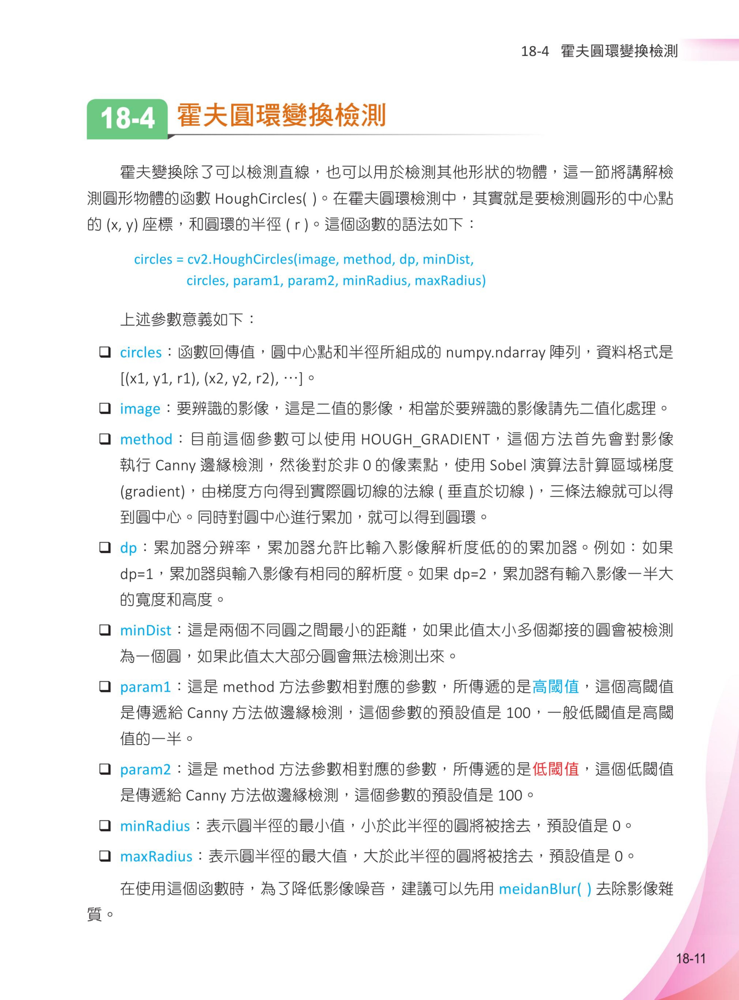
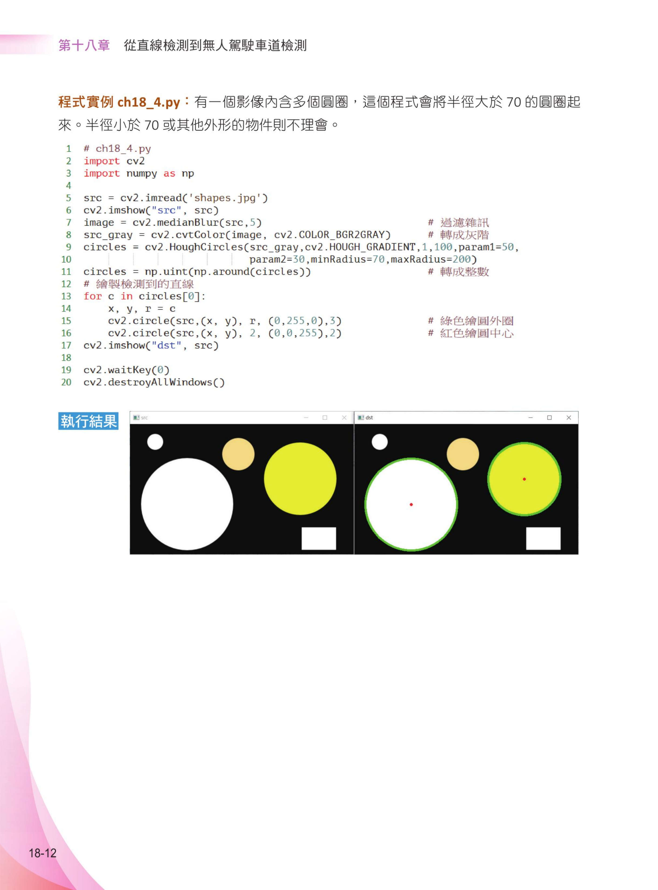
习题 1：使用 lane2.jpg，扩充 ch18_2.py，建立仓库道路影像。
习题 2：请重新设计 ch18_4.py，将所有圆圈起来。
1. 霍夫变换将影像空间的几何形状映射到参数空间，借由交会与投票判断最可能的直线或圆。
2. HoughLines() 回传 (ρ, θ)，需要再转换为两个端点后用 cv2.line() 绘图。
3. HoughLinesP() 直接回传 (x1, y1, x2, y2)，较适合车道线等线段检测。
4. HoughCircles() 可检测圆心与半径，实作前建议先用 medianBlur() 降噪。
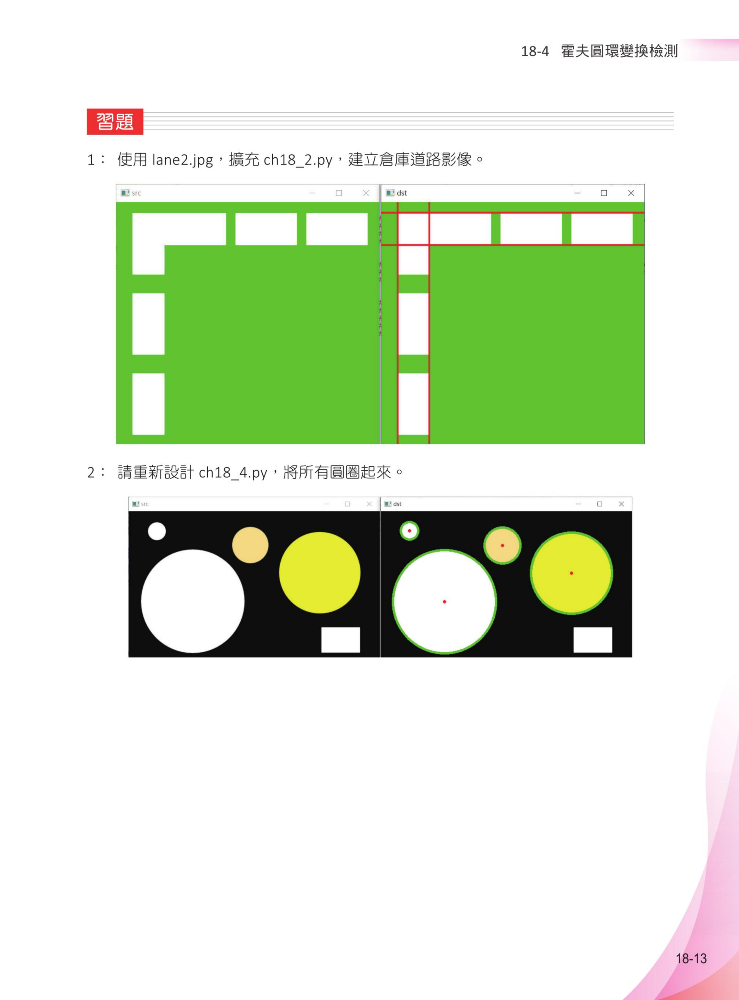
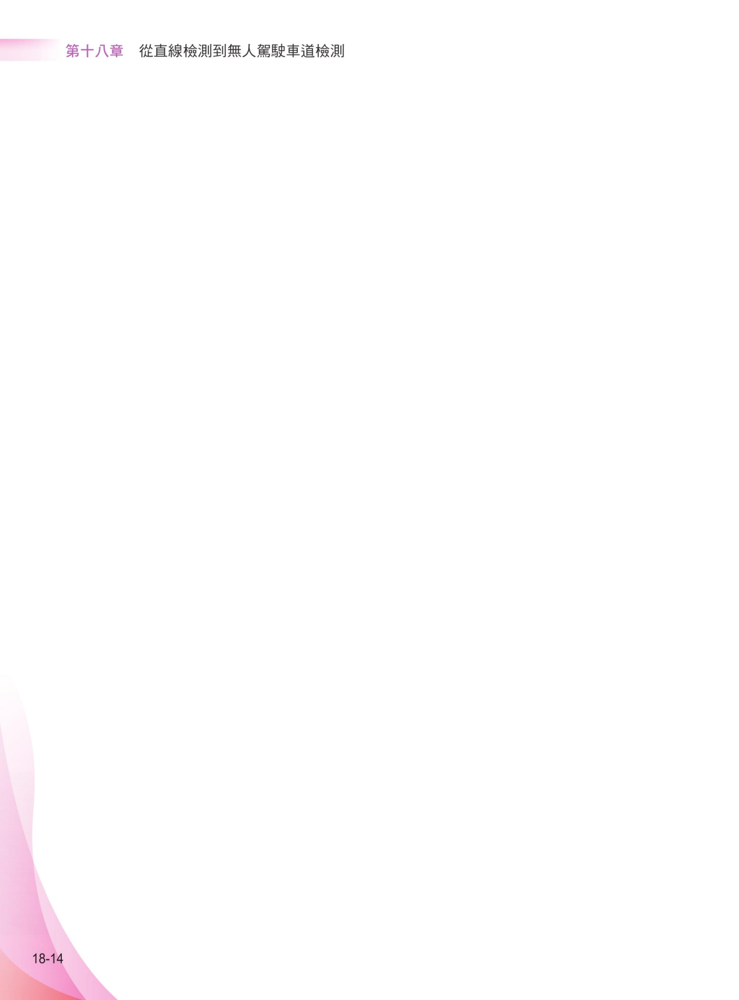